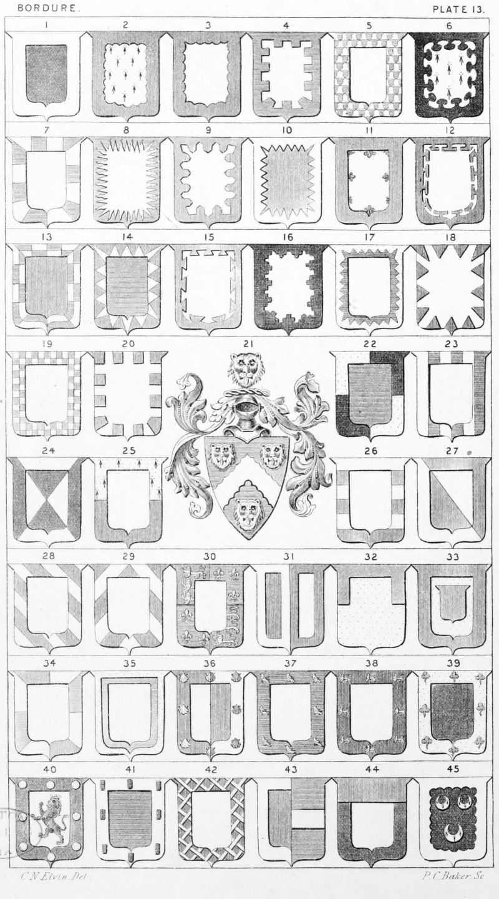

Plate 13.

Plate 13.
- Bordure. Sa. a Bordureor Border ar.
- Bordure Engrailed
- Bordure Invecked
- Bordure Embattled, or Crenellee
- Bordure Vair
- Bordure Nebulée
- Bordure Compony, or Gobony
- Bordure Rayonnée
- Bordure Urdée
- Bordure Indented
- Bordure Flory-counter-flory
- Bordure Potentee
- Bordure Compony-counter-compony
- Bordure Point in Point
- Bordure Dovetailed
- Bordure Battled, or embattled-grady
- Bordure Per Border Indented
- Bordure Indentee
- Bordure Chequy
- Bordure Denticules, or Denticles
- Arms of a Knight Bachelor. Az. a
chev. engr., betw. three leopard's
faces, ar. Shield ensigned with
a Knight's helmet ppr. mantled
az. doubled ar. Crest on a wreath of
the colours a leopard's face as
in the arms. As borne by Sir
Peter Eade, Knt., M.D.
- Bordure Quarterly
- Bordure Paly of six
- Bordure Per Saltire a Border counterchanged
- Bordure Per Fesse
- Bordure Barry of six
- Bordure Per Bend Border counterchanged.
Per Bend ar. and gu., a Border
counterchanged
- Bordure Bendy
- Bordure Chevronny of six
- Bordure of England and France
- Bordure Double counterchanged. Also Bordure blazoned Per-Pale ar. and gu.
Embordered of the same
- Bordure Demi
- Bordure Or an Inescutcheon gu. a bordure
of the last
- Bordure Bordure Quarterly quartered. Also
blazoned as a bordure divided
as gyronne of eight
- Bordure Charged with another, or a
Bordure surmounted of another,
also blazoned a Border parted
per Border
- Bordure Per-Pale. Per-Pale ar. and gu.
a bordure charged with eight
escallops all counterchanged
- Bordure Charged with eight martlets,
termed a Bordure Enaluron
- Bordure On a Bordure eight Lions pass,
guard. Also termed a Bordure
Enurny of eight Lions, &c.
- Bordure Verdoy of Trefoils. Sa. on a
border or, eight trefoils vert.
- Bordure Bezantee or Bezanty. Ar. a
Lion ramp, gu., ducally crowned
or, within a border sa. bezanty.
Either Entoyre of eight bezants
or garnished with bezants
- Bordure Billettée
- Bordure Fretty
- Bordure as borne when impaled. Gu. a
bordure ar., Impaling az. a
Fesse ar.
- Bordure Surmounted of a chief
- Bordure Engrailed. Sa. three crescents
Erm. within a bordure engrailed.
Bateman